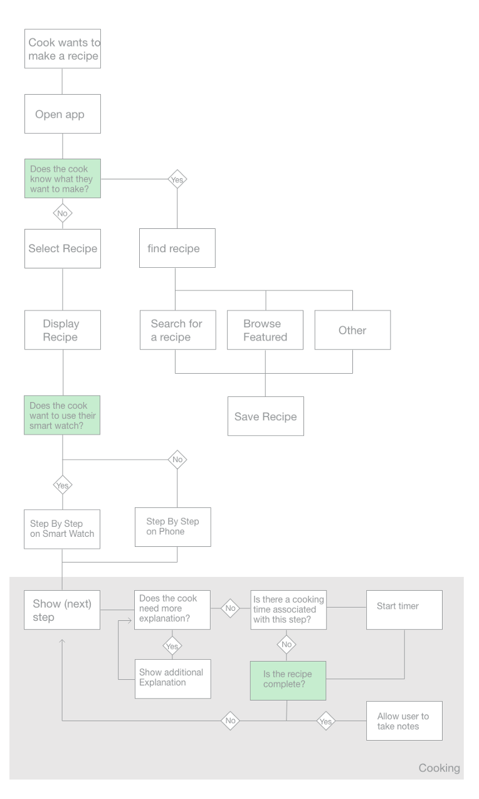
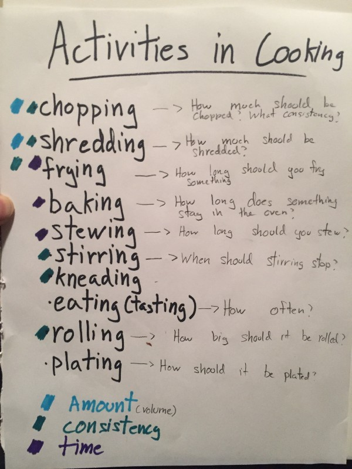
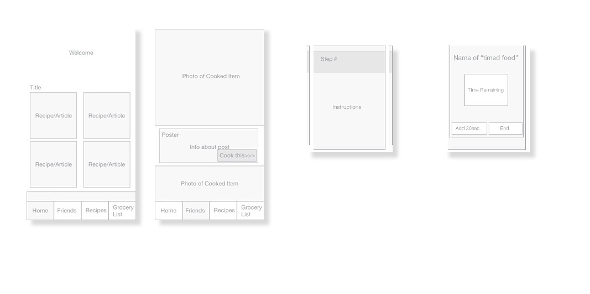
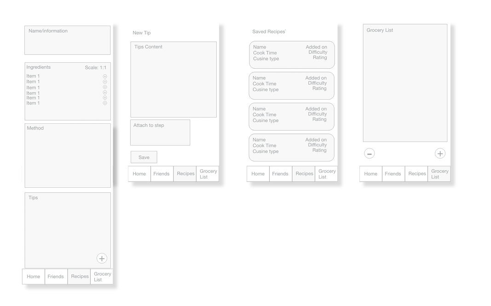
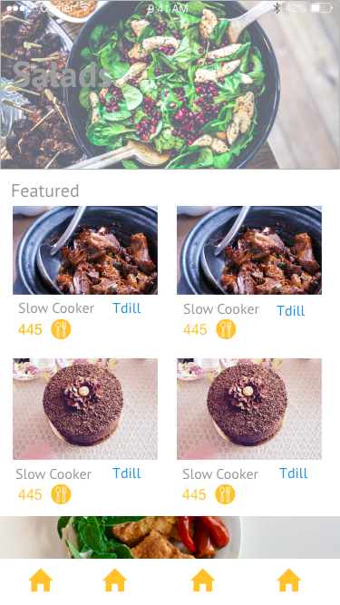
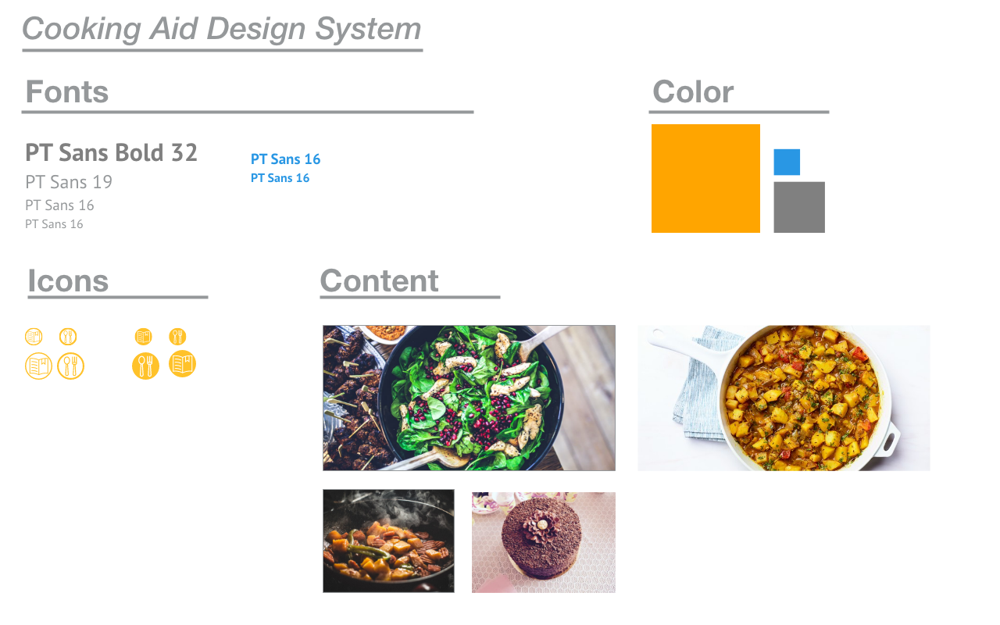
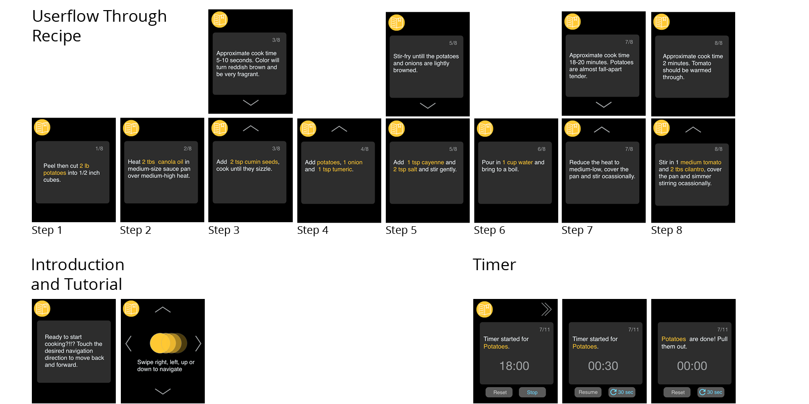
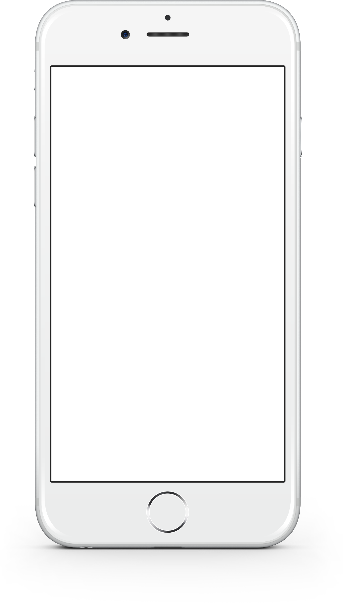

Cooking Aid
Get your hands dirty, not your phone.

Overview
Design for home chefs, I designed a Mobile and Wearable system that supports hobbist cooks before, after, and during cooking. The end result allows users to find and review recipes, prepare a shopping list, and most importantly receive assistance while cooking a recipe.
Background and Ethnographic Research
The process to design CookingAid began by identifying pain paints of home cooks through interviews and observational studies. The research I conducted used 4 semi-structured interviews and 3 deeping hanging out sessions to create insights into the behaviors of the home chef. Here are some of the findings:
| Priority/ Importance (1 high - 3 low) |
Finding |
|---|---|
| 1 | While cooking a recipe, most home cooks struggle to remember each step as it arises (this can be either ingredient related or a cooking action) leading to decreased performance in the kitchen |
| 1 | Home chefs participate in additional behaviors beyond cooking including socializing, recipe research and diary documentation in order to become better home cooks. |
| 2 | Depending on their cooking style, home cooks either have either high or low context for information needs. |
| 3 | Home cooks, tend to have some type of way to socially support their cooking habbit. Either through online communities or in real life friendships. |
| 3 | Skilled home chefs can collect information from many recipes rather than a single recipe. |
Design Goals
A solution that amplifies the cooking experience, reducing pain points throughout the cooking process and increasing performance (quality of cooking).
Tasty, Efficent, Convenient
Choosing the Correct Form
Because of the blue sky nature of this project, I approached the intial process without a particular medium for a solution in mind. In my whiteboard brainstorm, I choose not to include technology that was ill suited for the kitchen. For example, a Voice Assistant might be hard to use in a noisy kichen and using a touch screen with messy hands gets messy.
Information Hierarchy
After selecting the technology, I formulated an interaction model by identifying activities that home cooks do when cooking. My design process really benefited here because I could confidently translate my knowledge of the home chef cooking process I gained during the research phase to design decisions. Next, I used the following stateflow to map the actions cooks carry out when cooking.

Paper Prototype
I choose to use a paper prototype to test the feasibility of using a smart-watch for cooking. To test for the actual act of cooking, I made prop cooking objects(made out of paper), to help simulate the act of cooking.
Wireframe Mockups
Usability tests done with the paper prototype found that the "wearable as a kitchen assistant" model worked well. People easily and intuitively utilized the prototype to make a dish.
Using the original prototype as a starting point, I created additional features motivated by research. Previously I found that the cooks I studied actively search the web for the "correct" recipe(s), curate a shopping list and enjoy sharing and storing past recipes they cook.
To further articulate the design further, I embedded the features in a wireframe prototype.


Design System
To create a design system, I created a screen or two to see the design in context before identifying a theme. This is done so I can see if the design system I'm selecting will actually fit together well.
Sample UI to compose Design System


High Fidelity
I used wireframes as a tool to talk about my design with cooks and fellow designers.
From those I showed the design with, I got feedback on the layout, features and general concept of the app.
With this feedback, I used my wireframe prototype as a blueprint to make a high fidelity interactable prototype. Again the prototype was adjusted through informal usability tests and show-and-tell sessions.
Wearable Screens




Final Thoughts
I found through this process, that the prototyping technology for wearables is lacking. To truly test the effectiveness of this type of app, its necessary to test the same app idea in a real world context. I plan to do this in the future using the same mockup screens used for the high fidelity mockup and making a simple prototype in swift.